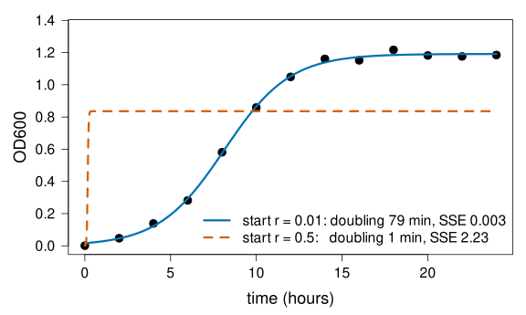
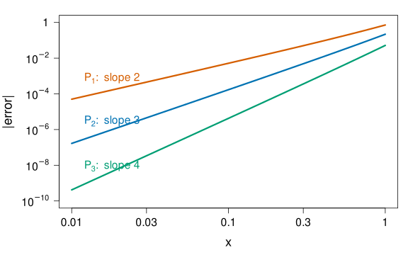

You already call optim(), uniroot(), integrate(), solve() and ode(). This course opens those boxes. Today sets up the whole course:
What a numerical method is: a finite recipe of arithmetic that approximates a mathematical answer.
Three ways a computation goes wrong: rounding, truncation and instability, each with a tiny example.
Error vs cost: more work buys accuracy, up to a limit.
A recap of Taylor polynomials, with the remainder term: the tool behind almost every method in the course.
Biology: a growth-curve fit that reports success and returns a doubling time of 1 minute.
A growth curve, a fit, a green light
Bacteria in a plate reader, OD600 every 2 hours for 24 hours. The reader exports time in minutes. Fit the logistic model N(t) = \dfrac{K}{1 + (K/N_0 - 1)\,e^{-rt}}:
t_min <-seq(0, 1440, by =120) # minutesod <-c(0.001, 0.047, 0.139, 0.282, 0.581, 0.859, 1.049,1.161, 1.152, 1.217, 1.182, 1.176, 1.185)logistic <-function(p, t) # p = (r, K, N0) p[2] / (1+ (p[2] / p[3] -1) *exp(-p[1] * t))sse <-function(p) sum((od -logistic(p, t_min))^2)fit <-optim(c(r =0.5, K =1, N0 =0.05), sse) # "r is about 0.5"fit$par# r K N0# 0.6759128151 0.8357871891 0.0009330162
optim minimises the sum of squared errors (SSE). fit$convergence is 0, meaning “converged”. No warning, no error.
Two “converged” fits of the same data

Same data, same model, same optim; only the starting value of r differs.
Both report convergence = 0. One is right (doubling 79 min), one is nonsense.
“Converged” means “stopped improving”, not “found the answer”.
What is a numerical method?
A numerical method is a finite list of arithmetic operations (+,-,\times,\div) that approximates a mathematical answer we cannot write down exactly.
x <-1# first guess for sqrt(2)for (i in1:5) { x <- (x +2/ x) /2# average of x and 2/xprint(x, digits =16)}# [1] 1.5# [1] 1.416666666666667# [1] 1.41421568627451# [1] 1.41421356237469# [1] 1.414213562373095
An approximation, an iteration, and a stopping rule. Each one is a place where error enters.
Questions for every method: how accurate? how fast? when does it fail?
Each one is a numerical method with tuning knobs (tolerances, starting values, step sizes) and defaults chosen for a typical problem.
Your problem may not be typical. The course teaches you what the knobs do.
Silent failures in two lines
integrate(dnorm, 0, 20000) # half the area under a normal: 0.5# 0 with absolute error < 0integrate(dnorm, 0, Inf)# 0.5 with absolute error < 4.7e-05uniroot(function(x) x^2-2, c(0, 2))$root -sqrt(2)# [1] -2.423776e-07
integrate samples a few points in [0, 20000]; all of them are far out where dnorm is 0. It reports 0, with an error estimate of 0.
uniroot stops when it is within its default tolerance, about 10^{-4}. Fine for a dose, not for a likelihood.
Three ways a computation goes wrong
Rounding error. The computer stores about 16 significant digits. Every operation rounds.
Truncation error. The method stops early: a finite sum for an infinite series, a finite step h instead of a limit h \to 0, a finite number of iterations.
Instability. The algorithm amplifies small errors (from 1 or 2) step after step, until they swamp the answer.
Plus one that is not the computer’s fault: an ill-conditioned problem, where tiny changes in the data change the answer a lot (unit 3).
The actual error, 1.709\times10^{-4}, is inside the bound. We bounded the error without knowing the answer.
How fast the error shrinks: order
From the remainder, the error of P_n is about C\,x^{n+1} for small x. Halve x:
x <-c(0.1, 0.05, 0.025)err1 <-exp(x) - (1+ x) # P1err1[1:2] / err1[2:3] # ratio when x is halved# [1] 4.068077 4.033683err2 <-exp(x) - (1+ x + x^2/2) # P2err2[1:2] / err2[2:3]# [1] 8.101774 8.050441
P_1: halving x divides the error by 4 = 2^2. P_2: by 8 = 2^3.
Notation: error = O(x^{n+1}), read “of order x^{n+1}”: it shrinks at least like x^{n+1}. The same halving test works for any method with a step size.
On log–log axes, order is a slope

If error \approx C x^{p}, then \log(\text{error}) = \log C + p \log x: a straight line with slope p.
Slope 2, 3, 4 for P_1, P_2, P_3. Every method in the course gets a plot like this.
A second expansion: \log(1+x)
A population grows by a fraction x per hour. The continuous rate is r = \log(1+x). For small x:
\log(1+x) = x - \frac{x^2}{2} + \frac{x^3}{3} - \dots
x <-0.01# 1 % per hourlog(1+ x) -c(x, x - x^2/2) # errors of P1 and P2# [1] -4.966915e-05 3.308532e-07
So r \approx x for small growth, with error about x^2/2 = 5\times10^{-5}.
Remainder of P_2: f'''(\xi) = 2/(1+\xi)^3, so R_2 = \dfrac{x^3}{3(1+\xi)^3}, between 3.24\times10^{-7} and 3.33\times10^{-7}. Actual: 3.31\times10^{-7}.
For very small x, computing log(1 + x) loses digits; R’s log1p uses this expansion instead (unit 2).
Linear systems: LU, pivoting, sparse matrices. Spectral unmixing, count matrices.
Least squares: QR, SVD, regularisation. Calibration curves, deconvolution.
Eigenvalues: power iteration, QR algorithm, Lanczos. Leslie matrices, PCA.
Interpolation: polynomials, splines, FFT. Smoothing time courses, circadian rhythms.
Differentiation and integration: finite differences, quadrature, Monte Carlo. Growth rates, AUC.
ODEs: Euler to Runge–Kutta, stiffness, Gillespie. Epidemics, gene circuits.
Optimisation and fitting: gradient methods, nonlinear least squares, identifiability. Today’s growth curve.
Diffusion and heat: finite-difference PDEs in microfluidic chips.
Further reading: finite elements, flow solvers, iterative solvers.
Next in Part 1
How computers store numbers: how a double is stored, machine epsilon, overflow and underflow, why 0.1 + 0.2 != 0.3. A likelihood over 10 000 alignment sites underflows to 0: log-likelihoods and log-sum-exp.
Error, conditioning and stability: absolute and relative error, catastrophic cancellation, the condition number, stable vs unstable algorithms. A variance formula that loses all its digits.
Convergence and cost: truncation vs rounding, order of accuracy on log–log plots, big-O operation counts, timing code. From 100 genes to 20 000 genes × 100 000 cells.
Each unit: lecture, quiz, exercise with by-hand problems and code (R and Python).
Summary
A numerical method approximates an answer with finitely many arithmetic steps: approximation, iteration, stopping rule.
Three ways it goes wrong: rounding (16 digits), truncation (stopping early), instability (errors amplified). Plus ill-conditioned problems.
Error vs cost: more work buys accuracy, down to the rounding floor.
Taylor: f(x) = P_n(x) + R_n(x), R_n = \frac{f^{(n+1)}(\xi)}{(n+1)!}(x-a)^{n+1}. The error is O(h^{n+1}): a slope n+1 on a log–log plot.
Library routines fail silently. Plot the result, try several starts, check units, and do not trust convergence = 0 alone.